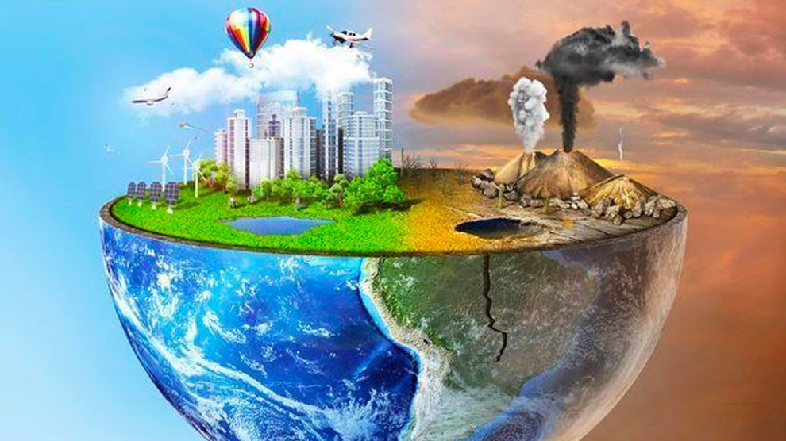

Perdida De Valores
La pérdida de valores se refiere al declive en la adherencia a principios éticos y morales fundamentales en una sociedad.
Causas:
- Individualismo: Enfoque excesivo en los intereses personales sobre el bien común.
- Influencia de Medios: Medios de comunicación que promueven valores negativos.
- Desintegración Familiar: Cambios en la estructura y cohesión de la familia.
Impactos:
- Comunidad: Aumento de la violencia, delincuencia y desconfianza entre los miembros de la comunidad.
- Relaciones Personales: Deterioro de las relaciones humanas y pérdida de empatía.
- Sociedad: Mayor corrupción y disminución de la responsabilidad social.
Soluciones:
- Educación en Valores: Fomentar la educación ética y moral desde temprana edad.
- Fortalecimiento Familiar: Apoyar a las familias para que inculquen valores positivos.
- Medios Responsables: Promover medios de comunicación que difundan valores constructivos.
Temas Extras:
Calentamiento Global

Leer mas...
Uso De Fentanilo
Leer Mas...
Pandemias
Leer mas...
Incendios Forestales

Leer mas...
Impacto De La Tecnologia

Leer mas...